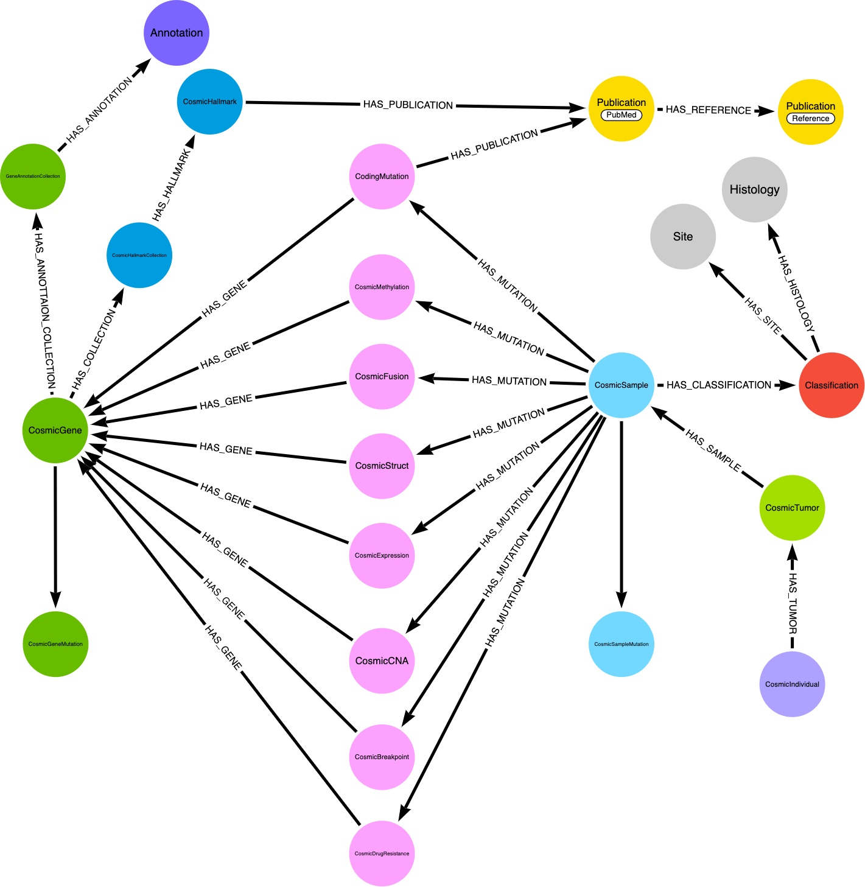

CosmicGraphDb
Introduction
CosmicGraphDb is a backend application implemented in Kotlin 1.7 that will load data from the Catalog of Somatic Mutations in Cancer (COSMIC) data files into a local Neo4j 5.1 database. The major graph database nodes and relationships are illustrated below. This schema diagram does not specify cardinality (e.g. A tumor may have >1 samples). CosmicGraphDB represents a specialized addition to the Neo4j database created by the GenomicGraphCore]application.
This repository does not distribute any of the COSMIC database content. Users must obtain a license from the Sanger Laboratory to download the required files: 1.
1 See COSMIC Licensing for details
CosmicGraphDb Database Schema
The nodes and relationships created by the GenomicGraphCore application are enhanced by the nodes and relationships shown in the following schema diagram 
Application Design
The application takes advantage of Kotlin’s native concurrency capabilities (i.e. channels & flows) to minimize execution run times. Data from COSMIC files are concurrently loaded into Neo4j as soon as parent-child dependencies are met. For example, as soon as loading data from the CosmicSample file is completed, loading all the specialized mutation files is initiated. Within each loader, distinct tasks are run concurrently using Kotlin channels. This overlap of processing tasks lowers the memory required to process the large COSMIC files.
Application Requirements
Applications running on the GenomeGraphCore platform access configuration settings from files stored in a users $HOME/.genomicapps directory. For example the settings requires to establish a connection to a Neo4j daatabasee are in the neo4j.config file.
COSMIC Data Files
With the acquistion of a license from The Sanger Laboratory, COSMIC data files can be downloaded from their [FTP] (https://cancer.sanger.ac.uk/cosmic/download) site. The local file location and file names must be specified in the cosmicdb.config file.
The current data import process is based on column names specified in COSMIC Release 96. There are usually a small number of breaking changes from one release to another.
This repository will attempt to remain consistent with the latest COSMIC release.
Sample vs Complete Loading
Many of the COSMIC files downloaded from the Sanger Lab are very large, making testing of the loading procedure unwieldy and time-consuming. The application can accommodate loading a subset (i.e. sample) of the larger files. The user can create a sample file collection by executing the create_cosmic_sample_files.sh shell script from the directory containing the files downloaded from Sanger. The single argument to this script is the number of lines to copy from the larger files. Some of the smaller, reference files (e.g. gene census, classification) are copied over completely.
e.g create_cosmic_sample_files.sh 4000
In this example the first 4000 rows, including the header row, are used to create a sample file in the sample subdirectory. The new sample file must contain the header row from the original COSMIC file and retain the same filename as the complete file.
The user should note that some Neo4j relationships that cross COSMIC files may not be completed in the resulting sample database. A mutation listed in the first 4000 rows of the CosmicMutantExportCensus.tsv file may be related to a Cosmic sample that is not within the first 4000 rows of the CosmicSample.tsv file. As a result, creating a Neo4j sample database should only be performed to confirm that the application is functioning properly in the user’s environment and to examine the structure of a small database instance. Please note that when the application is invoked to load a sample database, any existing nodes and relationships in that database are deleted.